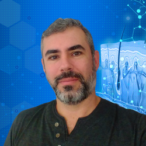

Quem é Rodrigo Cardoso?
Conheça minha história
O que pequenas decisões podem gerar ao longo do tempo?
Essa é uma pergunta que deveria ser obrigatória na vida de todas as pessoas, digo isso, pois, essa questão assombra minha mente nos dias atuais.
Quando ainda na infância, pensava apenas em brincar com os amigos, sentar em frente a tv e assistir desenhos e animes o quanto eu pudesse, a falta de orientação por parte dos pais, que muitas vezes deixavam por minha conta (agora que sou pai, entendo que isso é errado, pois, crianças não têm ideia do que vão enfrentar na vida adulta).
O tempo passa e durante a juventude continuo com a visão errada de que estudar é besteira, porém, com muitos sonhos de crescer, ter sucesso, ganhar um bom salário e ter uma vida confortável.
Sem demora, a vida adulta chega, a realidade bate a porta, então, minha vida profissional passa a ser marcada por fracassos e sonhos não realizados ao mesmo tempo que conheço minha melhor amiga e minha salvadora, a Viviane (minha esposa), ela começa a me mostrar como os estudos podem mudar a vida das pessoas e poderia mudar a minha também, confesso que no começo não gostei da ideia de voltar a estudar, eu achava chato, massante e tudo de ruim (no fundo eu me achava burro demais para voltar aos estudos, principalmente depois dos 30 anos), mas, ela não desistiu, continuou insistindo e me mostrou que estudar é muito bom e pode sim ser divertido.
Termino o ensino fundamental aos 17 anos e não pego em livros até depois de alguns anos de casado, aos 30 anos volto e com um olhar mais adulto, descubro um mundo totalmente novo e empolgante, aprender e estudar tornou-se um prazer que não consigo descrever.
Após o casamento começo a trabalhar como motorista de ônibus, um emprego que paga as contas, porém, um emprego que só paga as contas e nada além disso, cada dia nesse trabalho é como uma dia a menos com a minha paixão que é programar (não me entenda mal, sou grato por ter um emprego quando muitos não têm, mas, trabalhar em algo que você não gosta dói no fundo da alma) e a empresa não ajuda, ter que dirigir, cobrar a passagem (o troco para trabalhar é por minha conta, se, eu não quiser ter problemas com os passageiros), empresa não paga as horas extras que sou obrigado a fazer, tenho que levar um número de passageiros pagantes, caso eu não faça, a empresa me tira da escala do dia e me suspende (com essa suspensão perco 2 dias de remuneração) a empresa de ônibus tem a cultura de punir, mesmo sem o funcionário nãter feito nada, outro dia fui suspenso, a alegação foi distancia de segmento ( quer dizer que eu estava andando próximo do carro da frente, como se o intervalo de um carro para outro é de 30 minutos ?).
É por essas e outra que tomei uma decisão:
Não vou gastar minhas forças tentando mudar a cultura errada deles, vou focar minhas força e meu pouco tempo em casa para estudar mais, então ao 41anos, decidi cursar faculdade, entro em Análise e Desenvolvimento de Sistemas, aprender inglês, linguagens de programação com HTML5, CSS3, JAVASCRIPT, NODEJS entre outros, migrar para uma área onde serei valorizado .
Então hoje sigo na trajetória dessa profissão que tando amo, ser um desenvolvedor é um sonho e quero ser um dos melhores.
Estou no último ano do curso de Análise e Desenvolvimento de Sistemas, ganhei experiência no desenvolvimento de Front-end com HTML5, CSS3 e Java Script e como todo desenvolvedor de interfaces, acabei virando desgner gráfico para criar imagens que atendam as necessidades dos clientes
Hoje trabalho no desenvolvimento contínuo de e-commerces (trocando em miúdos, é deixar o sites sempre bonito)
Para mais informações, vamos conversar no inbox.
Entre em contato para conversarmos melhor.
Assim posso tirar minhas dúvidas e as suas, vamos marcar um meet pelo chat, para alinhar alguns ponto, para que assim possamos alcançar o melhor resultado possível do seu projeto.
Espero seu contato para conversarmos.